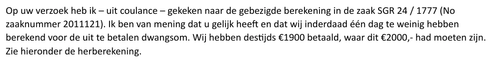

Dokaz · E-mail
Nacionalni ombudsman priznaje računsku grešku u obračunu penala, 11. juna 2026.
Odlomak
„Na Vaš zahtjev sam – u znak dobre volje – pogledala obračun primijenjen u predmetu SGR 24 / 1777 (No broj predmeta 2011121). Smatram da ste u pravu i da smo zaista obračunali jedan dan premalo za penal koji je trebalo isplatiti. Tada smo isplatili 1900 €, a to je trebalo biti 2000,- €. Ponovni obračun pogledajte u nastavku.“ Stranica 1, treći pasus e-maila, ispod „Dank voor uw bericht“ (‚hvala na Vašoj poruci‘). Prijevod s nizozemskog; izvorni tekst naveden je ispod.
Izvorni tekst
“Op uw verzoek heb ik – uit coulance – gekeken naar de gebezigde berekening in de zaak SGR 24 / 1777 (No zaaknummer 2011121). Ik ben van mening dat u gelijk heeft en dat wij inderdaad één dag te weinig hebben berekend voor de uit te betalen dwangsom. Wij hebben destijds €1900 betaald, waar dit €2000,- had moeten zijn. Zie hieronder de herberekening.” „No“ je skraćenica koju koristi sam Nacionalni ombudsman, a „dwangsom“ je penal zbog kašnjenja.

Zašto je ovaj dokument važan
U ovom e-mailu od 11. juna 2026. Nacionalni ombudsman priznaje da je za penal obračunat jedan dan premalo: isplaćeno je 1.900 €, a dugovalo se 2.000 €. Esej navodi da je Nacionalni ombudsman pri isplati penala 2024. godine napravio grešku u obračunu i da ju je ispravio tek nakon što je Giltay u junu 2026. godine najavio da će se obratiti građanskom sudu. E-mail dan po dan iznosi ponovni obračun i utvrđuje da je rok od dvije sedmice istekao 18. januara 2024. Prema eseju, ovaj odgovor stigao je tri dana nakon što je Giltay najavio da će stvar u suprotnom iznijeti pred građanski sud, a završava pitanjem o podacima potrebnim za uplatu preostalih 100 €.
Porijeklo
- Dokument
- E-mail, ispisan u PDF
- Pošiljalac
- JZ (Juridische Zaken, Pravni poslovi), Nacionalni ombudsman, potpisala Smahane Karroumi, viša pravna savjetnica
- Primalac
- Stichting de Verbeelding, na ruke Hoogerkampa, Giltayevog punomoćnika u Woo-postupcima
- Datum
- 11. juna 2026., 09:31 sati
- Predmet
- RE: SGR 24 / 1777
- Broj predmeta
- SGR 24 / 1777, uz vlastiti broj dosjea ombudsmana 2011121
- Upućivanja
- Član 8:55b Općeg zakona o upravnom pravu (Awb) i presuda od 4. januara 2024.; rok od dvije sedmice koji je tekao od 5. januara 2024.
- Jezik
- Nizozemski
- Stranice
- 1 u ovom PDF-u; podnožje ispisa nosi broj 1 od 2 i vremensku oznaku 11-6-2026, 14:58 sati
- Mjesto čuvanja
- Arhiv autora
- Vidi također
- Okružni sud u Hagu, presuda od 27. decembra 2023. (ECLI:NL:RBDHA:2023:20409)Bankovni izvod ING-a, penal koji je isplatio Nacionalni ombudsman, 16. februara 2024.Nacionalni ombudsman Giltayu, 28. februara 2024.
Citirano u: eseju „Zabrana pala, knjiga opstala“ u poglavlju (9) „Zauvijek zabilježeno“.
Stranica dokaza: https://
Dokument: https://
Posljednja izmjena 9. septembra 2026., pristupljeno 3. oktobra 2026.

Ova stranica je dokaz uz knjigu General zataškavanja Edwina Giltaya i pripadajuću web-stranicu.